🐦 展翅翱翔：亚洲
Wingspan Asia · 设计：Elizabeth Hargrave · Stonemaier Games 出版 · 1–2（混合至 6–7） 人 · 官方英文规则书全文翻译（16 页 · AI 辅助机翻）
本页收录《展翅翱翔：亚洲》（Wingspan Asia, 2022）的原版官方规则书全部 16 页（底本：Stonemaier Games 官方规则(r9 文本版)，WS_Asia_Rulebook_r9.pdf），逐页随图排列，点击任意图片即可放大查看；每页下方默认折叠了该页的 AI 辅助中文机翻对照，需要时可展开。规则内容归 Stonemaier Games 及版权方所有，收录仅供个人学习查阅。
整理说明：机翻对照按本站术语口径对齐（牌库/手牌/回合/轮/板块/指示物等），PDF 图文混排页的语序可能与原书视觉顺序略有出入；规则细节请一律以页面上方原书页面为准。
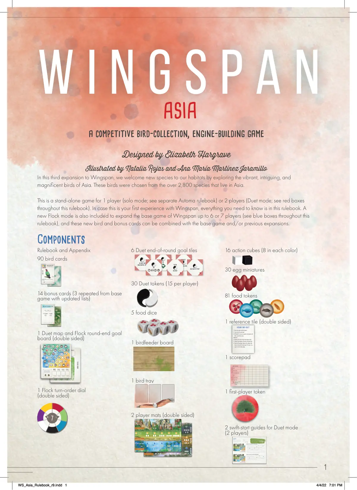
📝 第 1 页 AI 机翻对照（点击展开）
在《翼展》的第三个扩展中，我们通过探索亚洲充满活力、引人入胜且壮观的鸟类，将新的物种引入我们的栖息地。这些鸟类是从亚洲生活着的2800多个物种中挑选出来的。
这是一款供1名玩家（单人模式；请参阅单独的Automa规则书）或2名玩家（二重奏模式；请参阅本规则书中的红色方框）游玩的独立游戏。如果这是您第一次接触《翼展》，您需要了解的所有内容都在本规则书中。还包含一个新的群组模式，可将《翼展》基础游戏扩展至6或7名玩家（请参阅本规则书中的蓝色方框），这些新的鸟类和奖励卡可以与基础游戏和/或之前的扩展组合使用。
组件
规则书和附录
90张鸟类卡牌
14张奖励卡（3张来自基础游戏，带有更新列表）
1张二重奏版图和群组回合结束目标板（双面）
1个群组回合顺序轮盘（双面）
6张二重奏回合结束目标指示物
30个二重奏指示物（每名玩家15个）
5个食物骰子
1个喂食器版图
1个鸟类托盘
2个玩家版图（双面）
16个行动立方体（每种颜色8个）
30个蛋迷你模型
81个食物指示物
1个参考指示物（双面）
1个记分板
1个起始玩家指示物
2份二重奏模式的快速入门指南（2名玩家）
W I N G S P A N
一款竞争性的鸟类收集、引擎建设游戏
设计：Elizabeth Hargrave
插画：Natalia Rojas 和 Ana María Martínez Jaramillo
获得食物
产蛋
从喂食器中抽取鸟类卡牌
到鸟类上
然后激活此行中任何棕色能力
然后激活此行中任何棕色能力
然后激活此行中任何棕色能力
打出一张鸟类卡牌
游戏结束：
5/2分
用于多数
已使用
游戏结束：
5/2分
用于多数
已使用
游戏结束：
5/2分
用于多数
已使用
/
/
/
/
/
/
/
/
/
获得食物
产蛋
从喂食器中抽取鸟类卡牌
到鸟类上
然后激活此行中任何棕色能力
然后激活此行中任何棕色能力
然后激活此行中任何棕色能力
打出一张鸟类卡牌
A
亚洲翡翠鸠（Asian Emerald Dove Chalcophaps indica）
这是印度泰米尔纳德邦的州鸟。
44厘米
打出时：在此列中的每只其他鸟类上放置2个蛋。
+
+
A
食丸传播者（PELLET DISSECTOR）
和
指示物
储存在鸟类上
（13%的鸟类可以储存食物）
2到3个储存：
4+个储存：
A
在任何一行水平行中
A
在奖励空间上
最少
A
在
A
在
A
在版图边缘
A
在版图上
总计
卡牌上的数量
鸟类
奖励卡
回合结束目标
每个值1分
蛋
卡牌上的食物
卡牌上的 tucked 卡
最大连续群组中的二重奏指示物
总计
多人游戏
第1轮
群组模式
第2轮
第3轮
第4轮
最多
最多
最多
最多
第一名
第一名
第一名
第一名
第二名
第二名
第二名
第二名
第三名
第四名
第五名
第三名
第四名
第五名
第三名
第四名
第五名
第三名
第四名
第五名
第4轮
第3轮
第2轮
第1轮
2 分
0 分
0 分
0 分
0 分
3 分
4 分
5 分
游戏结束：在你的最大连续组中，每个指示物得 1 分。
鸟喙
向右
鸟喙
向右
鸟喙
向左
鸟喙
向左
<50cm
<50cm
50+cm
50+cm
如果你将你的指示物放在这里，
你可以在你的回合移除它，
重置喂鸟器或鸟盘。
最多
最多
最多
最多
第 1 轮
玩家 A
设置：正常进行所有设置步骤，除了选择卡牌和食物指示物。相反，从以下内容开始（所有提到的卡牌都有红色边角）：
•3 只鸟：
» 红色原鸡
» 柳山雀
» 小白鹭
•1 张奖励卡：森林护林员
•2 个食物指示物：
和
使用本指南和这些卡牌帮助新玩家学习《Wingspan》的双人模式。这些说明描述了第一轮的前 4 个回合。这些卡牌可以在未来的游戏中洗入牌库。
第 1 回合：在你的森林中放置柳山雀
a. 在你的玩家版图顶部的细长"放置一只鸟"行中放置 1 个你的行动立方体。
b. 在你的森林的第一个空间中放置你的柳山雀。弃置你的
指示物来支付费用。
• 鸟的能力现在不被激活。
c. 在地图上放置一个双人模式指示物，放在顶行有
符号的空间。这与你放置的鸟相匹配：你在那个栖息地放置了你的鸟，并且它有那个巢穴符号。
d. 因为地图上的那个空间有
符号，你获得一个奖励：从喂鸟器中选择 1 个骰子。从喂鸟器中移除它，并拿取一个匹配的食物指示物。
• 如果可以，拿取一个
或
，这样你以后可以花费它来放置你的红色原鸡。
• 骰子将留在喂鸟器外，直到所有骰子被重新投掷。
e. 将你的行动立方体移动到你的玩家版图的左侧部分，那里写着"放置一只鸟"。这标志着你回合的结束。
• 虽然你的回合很简单，移动行动立方体可能看起来不必要，但它们在游戏后期会非常有帮助，所以现在习惯使用它们是个好主意。
第 2 回合：在你的湿地中放置小白鹭
a. 在你的玩家版图顶部的"放置一只鸟"行中放置 1 个你未使用的行动立方体。
b. 在你的湿地的第一个空间中放置你的小白鹭。弃置你的
指示物来支付费用。
• 鸟的能力现在不被激活。
c. 在地图上放置一个双人模式指示物，放在第三行有
符号的空间。
d. 因为那个空间有
符号，你获得一个奖励：抽 1 张卡牌并将其加入你的手牌。
• 除非鸟的能力特别告诉你从牌盘或牌库抽牌，当你获得卡牌时，你可以从任一位置获取。
e. 将你的行动立方体移动到你的玩家版图的左侧部分。你的回合现在结束。
A
柳山雀
Poecile montanus
这些鸟类已被记录一天内储存多达 200 个食物物品。
20cm
激活时：从喂鸟器中缓存 1 个
、
或
到这只鸟上，如果有的话。
/
/
第4轮
第3轮
第2轮
第1轮
2分
0分
0分
0分
0分
3分
4分
5分
游戏结束：为你最大的连续群组中的每个指示物计1分。
喙朝右
喙朝右
喙朝左
喙朝左
<50厘米
<50厘米
50+厘米
50+厘米
如果你将你的指示物放置在这里，你可以在你的回合移除它来重置喂鸟器或鸟类托盘。
最多
最多
最多
最多
第1轮
第4轮
第3轮
第2轮
第1轮
2分
0分
0分
0分
0分
3分
4分
5分
游戏结束：为你最大的连续群组中的每个指示物计1分。
喙朝右
喙朝右
喙朝左
喙朝左
<50厘米
<50厘米
50+厘米
50+厘米
如果你将你的指示物放置在这里，你可以在你的回合移除它来重置喂鸟器或鸟类托盘。
最多
最多
最多
最多
第1轮
A
在地图边缘
A
在
A
在
A
在奖励空间上
最少
A
在地图边缘
A
在
A
在
A
在奖励空间上
最少
亚洲
1,3
2,4
轮结束——二重奏
- 使用任何轮结束的鸟类能力。
- 计算轮结束目标分数。
- 如果第4轮结束，使用游戏结束能力，然后计算最终分数。
否则：
- 从玩家版图上移除所有行动立方体。
- 弃置并替换鸟类托盘中的所有卡牌。
6. 将起始玩家指示物传递给在轮结束目标上失败的玩家。如果是平局，则传递给另一位玩家。
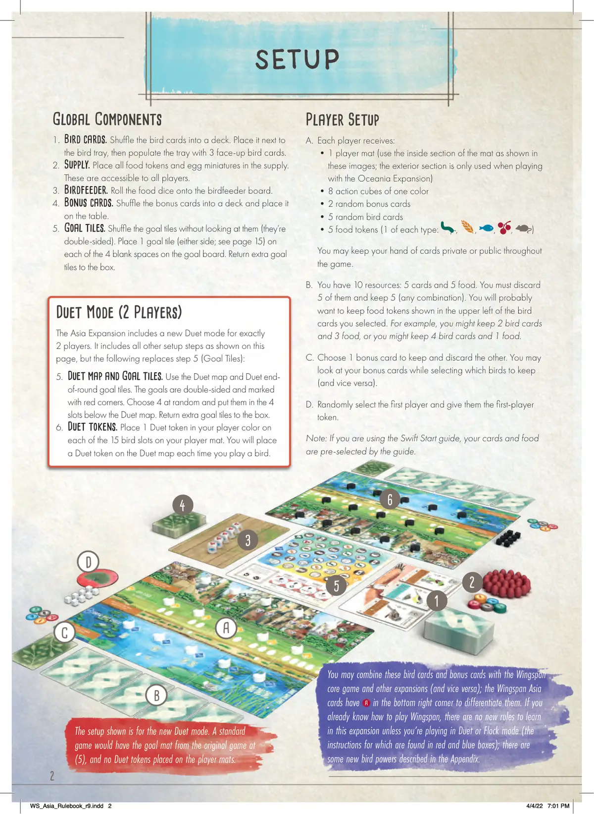
📝 第 2 页 AI 机翻对照（点击展开）
全局组件
- 鸟牌。将鸟牌洗混成牌库。把它放在鸟托盘旁边，然后在托盘中放置3张正面朝上的鸟牌。
- 公共资源。将所有食物指示物和蛋模型放在公共资源区。所有玩家都可以使用这些资源。
- 鸟 feeder。将食物骰子掷到鸟 feeder 板上。
- 奖励卡。将奖励卡洗混成牌库并放在桌上。
- 目标板块。不看内容地将目标板块洗混（它们是双面的）。在目标板上的4个空白位置各放置1个目标板块（任意一面；见第15页）。将多余的目标板块放回盒中。
设置
玩家设置
A. 每位玩家获得：
• 1个玩家垫（使用垫子的内部部分，如图所示；外部部分仅在玩 Oceania 扩展时使用）
• 8个一个颜色的行动方块
• 2张随机奖励卡
• 5张随机鸟牌
• 5个食物指示物（每种类型各1个：
,
,
,
,
）
你可以选择在整个游戏中将你的手牌保持私密或公开。
B. 你有10个资源：5张卡牌和5个食物。你必须弃掉其中的5个，保留5个（任意组合）。你可能想要保留你选择的鸟牌左上角显示的食物指示物。例如，你可能保留2张鸟牌和3个食物，或者保留4张鸟牌和1个食物。
C. 选择1张奖励卡保留，弃掉另一张。在选择保留哪些鸟牌时，你可以查看你的奖励卡（反之亦然）。
D. 随机选择第一位玩家并给予其起始玩家标记。
注意：如果你使用快速入门指南，你的卡牌和食物已由指南预先选择。
A
B
C
D
双人模式（2人）
亚洲扩展包含一个专为2人设计的新双人模式。它包含本页所示的所有其他设置步骤，但以下内容替换步骤5（目标板块）：
- 双人地图和目标板块。使用双人地图和双人轮结束目标板块。这些目标是双面的，并标记有红色角。随机选择4个放入双人地图下方的4个槽位中。将多余的目标板块放回盒中。
- 双人指示物。在你的玩家颜色中，在每个玩家垫上的15个鸟槽位各放置1个双人指示物。每次你打出一张鸟牌时，你将在双人地图上放置一个双人指示物。
你可以将这些鸟牌和奖励卡与 Wingspan 核心游戏和其他扩展组合使用（反之亦然）；Wingspan 亚洲卡牌在右下角有 A 标记以区分它们。如果你已经知道如何玩 Wingspan，除非你在双人模式或群体模式中游玩（说明在红色和蓝色框中），否则这个扩展没有新规则需要学习；附录中描述了一些新的鸟牌能力。
所示设置为新的双人模式。标准
游戏将使用原游戏中的目标垫，位于(5)，且玩家垫上不放置任何二重奏指示物。
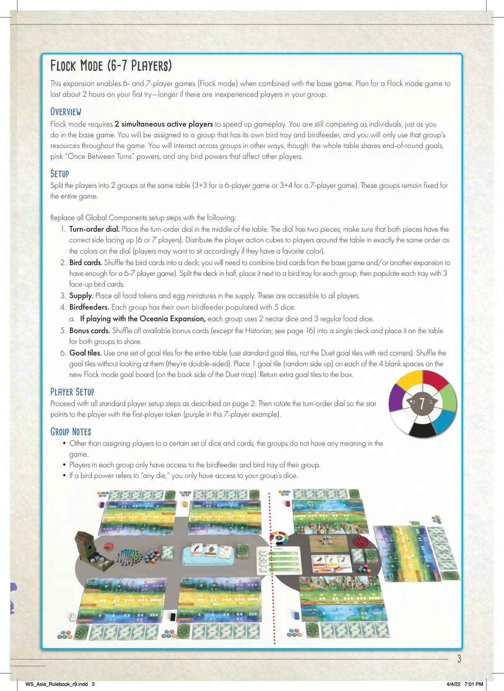
📝 第 3 页 AI 机翻对照（点击展开）
群组模式（6-7人）
此扩展与基础游戏结合时，可支持6人和7人游戏（群组模式）。计划在第一次尝试群组模式游戏时持续约2小时——如果组内有不熟练的玩家，时间会更长。
概览
群组模式需要2名同时活跃的玩家以加快游戏速度。你仍然像在基础游戏中一样作为个人进行竞争。你将被分配到一个拥有自己鸟托盘和喂食器的组，并且在整个游戏中只使用该组的资源。然而，你将通过其他方式与其他组互动：整个桌子共享回合结束目标、粉色"回合之间一次"能力，以及任何影响其他玩家的鸟类能力。
设置
将玩家分成2个组坐在同一张桌子旁（6人游戏为3+3，7人游戏为3+4）。这些组在整个游戏中保持固定不变。
用以下内容替换所有全局组件设置步骤：
- 回合顺序拨盘。将回合顺序拨盘放在桌子中央。拨盘有两部分；确保两部分都有正确的一面朝上（6人或7人）。按照拨盘上颜色的完全相同顺序将玩家行动方块分发给桌边的玩家（如果玩家有喜欢的颜色，他们可能需要相应就座）。
- 鸟类卡牌。将鸟类卡牌洗成一副牌；你需要结合基础游戏和/或其他扩展的鸟类卡牌，才能有足够的卡牌用于6-7人游戏）。将牌库分成两半，放在每个组的鸟托盘旁边，然后在每个托盘中放置3张正面朝上的鸟类卡牌。
- 补给。将所有食物指示物和蛋模型放在补给区。所有玩家都可以使用这些资源。
- 喂食器。每个组都有自己的喂食器，装有5个骰子。
a. 如果使用大洋洲扩展，每个组使用2个花蜜骰子和3个普通食物骰子。
- 奖励卡牌。将所有可用的奖励卡牌（除了历史学家；见第16页）洗成一副牌，放在桌子上供两组共享。
- 目标板块。为整张桌子使用一套目标板块（使用标准目标板块，而不是带红色角落的二重奏目标板块）。不看背面地洗混目标板块（它们是双面的）。在新群组模式目标板块（在二重奏版图背面）的4个空白空间上各放置1张目标板块（随机一面朝上）。将多余的目标板块放回盒中。
玩家设置
按照第2页描述的所有标准玩家设置步骤进行。然后旋转回合顺序拨盘，使星形指针指向拥有起始玩家标记的玩家（在这个7人示例中为紫色）。
组别说明
• 除了将玩家分配到特定的骰子和卡牌组外，组在游戏中没有任何意义。
• 每个小组的玩家只能访问自己小组的喂鸟器和鸟托盘。
• 如果鸟的能力指的是"任意骰子"，你只能使用你小组的骰子。
1,3
2,4
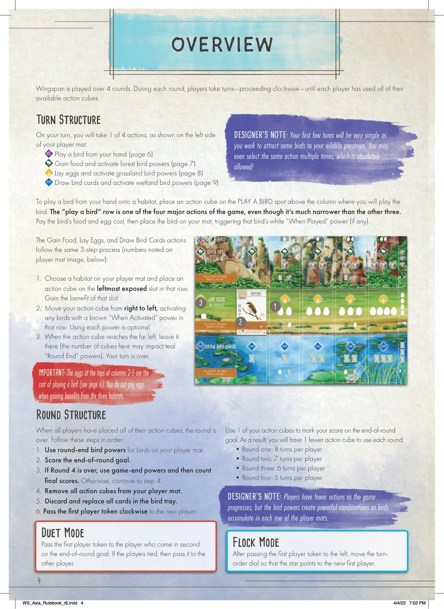
📝 第 4 页 AI 机翻对照（点击展开）
重要提示：第2-5列顶部的蛋是打出鸟类的成本（见第6页）。当你从三个栖息地获得好处时，不需要支付蛋。
翼展游戏共进行4轮。每轮中，玩家按顺时针方向轮流进行，直到每个玩家都用完所有可用的行动方块。
回合结构
在你的回合，你将执行以下4种行动之一，如玩家版图左侧所示：
从手牌中打出一张鸟类卡牌（第6页）
获取食物并激活森林鸟类能力（第7页）
产卵并激活草原鸟类能力（第8页）
抽取鸟类卡牌并激活湿地鸟类能力（第9页）
要从手牌中打出一张鸟类卡牌到栖息地，将一个行动方块放在你将要打出鸟类的列上方的"打出鸟类"位置。"打出鸟类"行是游戏的四大主要行动之一，尽管它比其他三个要窄得多。
支付鸟类的食物和蛋成本，然后将鸟类放在你的版图上，触发该鸟类白色"打出时"能力（如果有）。
获取食物、产卵和抽取鸟类卡牌这三个行动遵循相同的3步流程（如下玩家版图图片中标注的数字）：
1. 选择你玩家版图上的一个栖息地，并将一个行动方块放在该行最左边的空位上。
获得该空位的好处。
2. 将你的行动方块从右向左移动，激活该行中任何具有棕色"激活时"能力的鸟类。使用每个能力都是可选的。
3. 当行动方块到达最左边时，将其留在那里（此处的方块数量可能会影响青色"轮次结束"能力）。你的回合结束。
概览
设计师注：最初几个回合会很简单，因为你努力吸引一些鸟类到你的野生动物保护区。你甚至可以多次选择相同的行动，这是完全允许的！
轮次结构
当所有玩家都放置了他们的所有行动方块时，本轮结束。按顺序执行以下步骤：
- 使用玩家版图上鸟类的轮次结束能力。
- 计算轮次结束目标的分数。
- 如果第4轮结束，使用游戏结束能力，然后计算最终分数。否则，继续步骤4。
- 从你的玩家版图上移除所有行动方块。
- 弃置并替换托盘中的所有卡牌。
- 将起始玩家标记顺时针传递给下一个玩家。
使用你的一个行动方块在轮次结束目标上标记你的分数。因此，你每轮可使用的行动方块将减少一个：
• 第一轮：每位玩家8个回合
• 第二轮：每位玩家7个回合
• 第三轮：每位玩家6个回合
• 第四轮：每位玩家5个回合
设计师注：随着游戏进行，玩家的行动会减少，但鸟类能力会随着鸟类在玩家版图各行中积累而形成强大的组合。
获取食物
产卵
从喂鸟器抽取鸟类卡牌
在鸟类上
然后激活任何棕色
激活此行中的任何棕色能力
然后激活此行中的任何棕色能力
然后激活此行中的任何棕色能力
打出一只鸟
A
棕伯劳
Lanius cristatus
"Lanius"意为"屠夫"，这个名称的由来是因为伯劳会通过悬挂的方式储存它们的猎物。
24厘米
激活时：所有玩家可以从他们的个人供应中缓存1个指示物到他们的一只鸟上。
+
二重奏模式
将起始玩家标记传递给在轮末目标上排名第二的玩家。如果玩家平局，则将其传递给另一位玩家。
群集模式
将起始玩家标记向左传递后，移动回合顺序拨盘，使星形指针指向新的起始玩家。
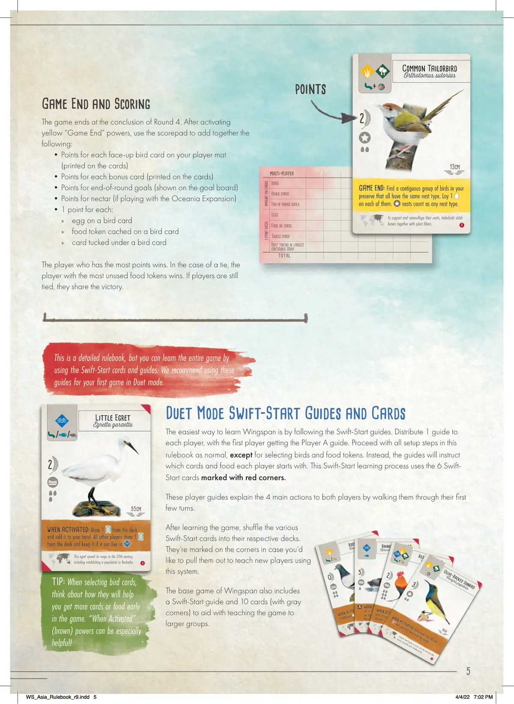
📝 第 5 页 AI 机翻对照（点击展开）
双人模式快速入门指南和卡牌
学习《翼展》最简单的方法是遵循快速入门指南。给每位玩家分发1份指南，第一位玩家获得玩家A指南。按照本规则书中的所有设置步骤进行，但选择鸟类和食物指示物除外。相反，指南会指示每位玩家起始时拥有的卡牌和食物。这种快速入门学习过程使用6个带有红色角落标记的快速入门卡。
这些玩家指南通过引导玩家完成前几个回合，向两位玩家解释4个主要行动。
学习游戏后，将各种快速入门卡洗入各自的牌库中。它们在角落处有标记，以防您想将它们取出，以便使用此系统教导新玩家。
《翼展》基础游戏还包括一份快速入门指南和10张带有灰色角落的卡牌，用于帮助向更多玩家群体教授游戏。
卡牌上的数量
鸟类
奖励卡
回合结束目标
每项1分
蛋
卡牌上的食物
卡牌收纳
最大连续组中的双人指示物
总计
多人游戏
这是一份详细的规则书，但您可以通过使用快速入门卡和指南来学习整个游戏。我们建议在双人模式的第一局游戏中使用这些指南。
提示：选择鸟类卡牌时，考虑它们如何帮助您在游戏早期获得更多卡牌或食物。"激活时"（棕色）能力可能特别有用！
A
小白鹭
Egretta garzetta
这种白鹭在20世纪扩展了其分布范围，包括在巴巴多斯建立了种群。
95厘米
激活时：从牌库摸1张牌并加入您的手牌。所有其他玩家从牌库摸1张牌，如果该牌能在该栖息地生存，则保留它。
/
/
A
岩鸽
Columba livia
这些鸟类在公元前3000年前就被驯化，用作信使和食物。
64厘米
激活时：所有玩家各打出1张栖息地卡。您额外打出1张栖息地卡。
/
3/28/
3/28/
A
犀牛海雀
Cerorhinca monocerata
在繁殖季节，这些群体狩猎的鸟类会在喙上方长出角状结构。
62厘米
激活时：掷任意2个骰子。如果您至少掷出1个，则从供应区将1个食物指示物缓存到这张鸟类卡上。所有玩家可以弃掉手牌中的1张卡牌，从供应区获得1个食物指示物。
A
红原鸡
Gallus gallus
大约8000年前，鸡是从这种丛林鸡驯化而来的。
75厘米
激活时：计算您所有鸟类卡上的蛋。如果总数少于6个，则在这张鸟类卡上放置1个蛋。
+
Cards r8 ind
Cards r8 ind
A
橄榄背太阳鸟
Cinnyris jugularis
太阳鸟主要吸食花蜜，但当喂养幼鸟时，它们也会吃昆虫。
16厘米
激活时：每位玩家可以掷任意一个骰子，并从供应区获得该食物。
ds_r8.indd 53
ds_r8.indd 53
A
缝叶莺
Orthotomus sutorius
为了支撑和伪装它们的巢穴，缝叶莺会将叶子缝合
与植物纤维一起。
13cm
游戏结束：在你的保护区中找到一个连续的鸟类群体，它们都具有相同的巢穴类型。在每个鸟上放置1个。
巢穴计为任何巢穴类型。
+
分数
游戏结束与计分
游戏在第4轮结束时结束。激活黄色"游戏结束"能力后，使用记分板将以下各项相加：
• 每张正面朝上的鸟类卡牌的分数（印在卡牌上）
• 每张奖励卡牌的分数（印在卡牌上）
• 每轮结束目标的分数（显示在目标板上）
• 花蜜的分数（如果使用大洋洲扩展）
• 每项1分：
» 鸟类卡牌上的蛋
» 缓存在鸟类卡牌上的食物指示物
» 塞在鸟类卡牌下的卡牌
得分最高的玩家获胜。如果平局，则拥有最多未使用食物指示物的玩家获胜。如果玩家仍然平局，则共享胜利。
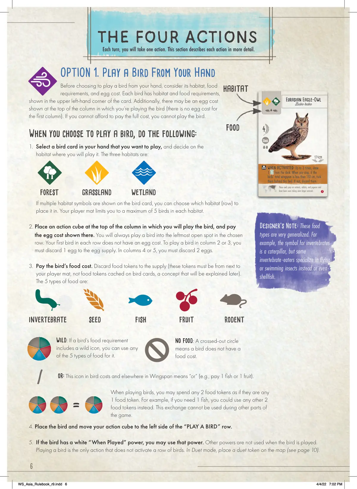
📝 第 6 页 AI 机翻对照（点击展开）
A
欧亚雕鸮
Bubo bubo
这些猫头鹰捕食啮齿动物、兔子和鸽子，甚至
有被观察到捕食更大动物的记录。
174cm
激活时：最多3次，从牌库摸1张牌。当你停止时，如果这些鸟类的总翼展小于110厘米，将它们扣置在这张鸟牌后面。否则，将它们弃置。
+
选项1：从手牌中打出一张鸟牌
在决定从手牌中打出一张鸟牌之前，请考虑其栖息地、食物需求和蛋成本。每张鸟牌都有栖息地和食物需求，显示在卡牌的左上角。此外，在你打出鸟牌的那一列顶部可能会显示蛋成本（第一列没有蛋成本）。如果你无法支付全部成本，你不能打出这张鸟牌。
当你选择打出一张鸟牌时，执行以下步骤：
- 选择你想要打出的手牌中的鸟牌，并决定你将在哪个栖息地打出它。共有三种栖息地：
如果鸟牌上显示了多个栖息地符号，你可以选择将其放置在哪个栖息地（行）中。你的玩家垫限制每个栖息地最多放置5只鸟。
- 在你将打出鸟牌的那一列顶部放置一个行动立方体，并支付显示在那里的蛋成本。你总是将鸟牌放置在所选行的最左侧空位。你在每行的第一只鸟没有蛋成本。要在第2或第3列打出鸟牌，你必须弃置1个蛋到蛋供应区。在第4或第5列，你必须弃置2个蛋。
- 支付鸟牌的食物成本。将食物指示物弃置到供应区（这些指示物必须来自你玩家垫旁边，而不是储存在鸟牌上的食物指示物，这个概念将在后面解释）。
5种食物类型是：
四种行动
栖息地
食物
设计师注：这些食物类型非常概括。例如，无脊椎动物的符号是毛毛虫，但一些食无脊椎动物的动物专门捕食飞行或游泳的昆虫，甚至是贝类。
每个回合，你将执行一个行动。本节将更详细地描述每个行动。
- 放置鸟牌并将你的行动立方体移动到"打出鸟牌"行的左侧。
- 如果鸟牌有白色的"打出时"能力，你可以使用该能力。其他能力在鸟牌打出时不使用。
打出鸟牌是唯一不会激活一行鸟牌的行动。在二重奏模式中，在版图上放置一个二重奏指示物（见第10页）。
森林
草原
湿地
无食物：一个圆圈被划掉表示鸟牌没有食物成本。
野生：如果鸟牌的食物需求包含野生图标，你可以使用5种食物中的任意一种来满足它。
或：在鸟牌成本和Wingspan的其他地方，这个图标表示"或"（例如，支付1个鱼或1个水果）=
在打出鸟牌时，你可以将任意2个食物指示物当作任意类型使用
1个食物指示物。例如，如果你需要1个鱼，你可以使用任何其他2个食物指示物来代替。这种交换不能在游戏的其他部分使用。
/
无脊椎动物
种子
鱼
水果
啮齿动物
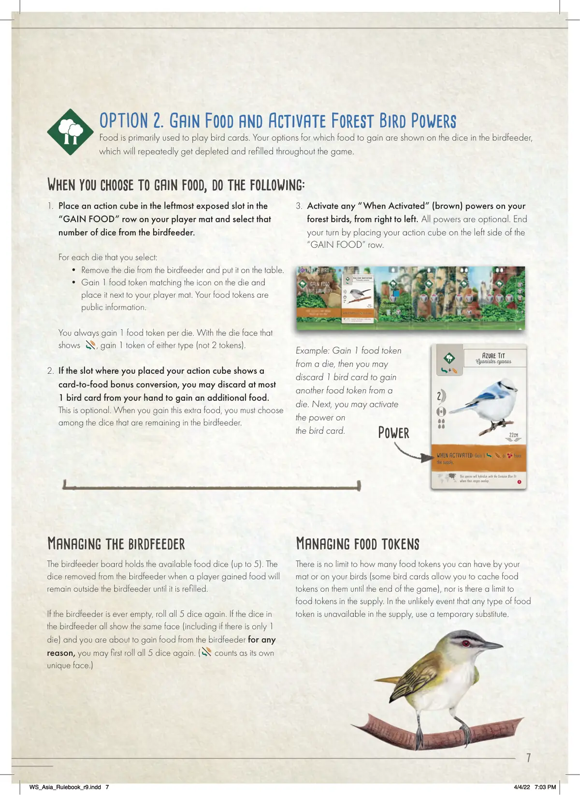
📝 第 7 页 AI 机翻对照（点击展开）
选项 2. 获取食物并激活森林鸟类能力
食物主要用于打出鸟类卡牌。你可以获取哪些食物选项显示在喂鸟器中的骰子上，这些骰子会在整个游戏过程中不断被消耗和重新填充。
当你选择获取食物时，执行以下操作：
1. 在你的玩家版图上"获取食物"行的最左侧已暴露槽位放置一个行动立方体，并从喂鸟器中选择相应数量的骰子。
对于你选择的每个骰子：
• 从喂鸟器中移除该骰子并将其放在桌上。
• 获得 1 个与骰子上图标相匹配的食物指示物，并将其放在你的玩家版图旁边。你的食物指示物是公开信息。
你总是每个骰子获得 1 个食物指示物。对于显示
的骰子面，获得 1 个任意类型的指示物（不是 2 个指示物）。
2. 如果你放置行动立方体的槽位显示了卡牌到食物的奖励转换，你可以弃掉最多 1 张手牌鸟类卡牌来获得额外的食物。
这是可选的。当你获得这额外食物时，你必须从喂鸟器中剩余的骰子中选择。
- 从右到左激活你森林鸟类上的"激活时"（棕色）能力。所有能力都是可选的。通过将你的行动立方体放在"获取食物"行的左侧来结束你的回合。
A
蓝山雀
Cyanistes cyanus
该物种在其分布范围重叠处与欧亚山雀杂交。
22cm
激活时：从供应区获得 1 个
、
或
。
+
能力
管理喂鸟器
喂鸟器版图容纳可用的食物骰子（最多 5 个）。当玩家获取食物时从喂鸟器中移除的骰子将留在喂鸟器外，直到它被重新填充。
如果喂鸟器 ever 变空，再次掷所有 5 个骰子。如果喂鸟器中的所有骰子显示相同面（包括只有 1 个骰子的情况），并且你出于任何原因即将从喂鸟器获取食物，你可以先再次掷所有 5 个骰子。（
算作其独特的面。）
管理食物指示物
你可以在你的版图旁边或你的鸟类上拥有任意数量的食物指示物（一些鸟类卡牌允许你在它们上缓存食物指示物直到游戏结束），供应区中的食物指示物也没有数量限制。在任何类型食物指示物在供应区中不可用的情况下，使用临时替代品。
蓝灰鹟
Polioptila caerulea
鹟的繁殖范围随着气候变化正在稳步北移。
15cm
激活时：从供应区获得 1 个
。
示例：从骰子获得 1 个食物指示物
，然后你可以弃掉 1 张鸟类卡牌来从骰子获得另一个食物指示物。接下来，你可以激活
鸟类卡牌上的能力。
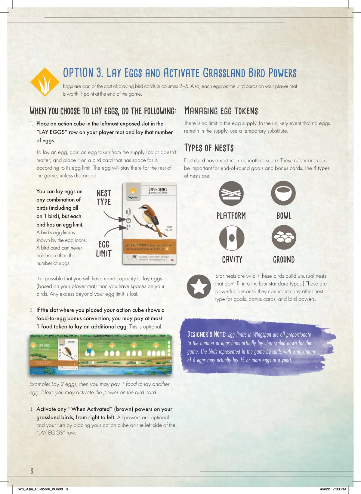
📝 第 8 页 AI 机翻对照（点击展开）
选项 3. 产卵并激活草原鸟类能力
产卵是在第2-5列打出鸟类卡牌的一部分成本。此外，在你的玩家版图上，每张鸟类卡牌上的每个卵在游戏结束时都值1分。
当你选择产卵时，执行以下操作：
1. 在你的玩家版图上"产卵"行的最左侧空位放置一个行动立方体，并产下相应数量的卵。
要产卵，从供应区获取一个卵指示物（颜色无关紧要），并根据其卵量限制将其放置在有空间的鸟类卡牌上。除非被弃置，否则卵将一直留在那里。
你可以将卵产在任何组合的鸟类上（包括全部产在1只鸟上），但每只鸟都有卵量限制。
一只鸟的卵量限制由卵图标显示。
一张鸟类卡牌上永远不能超过这个数量的卵。
你可能拥有比你的鸟类上空间更多的产卵能力（基于你的玩家版图）。超出你卵量限制的任何多余部分将丢失。
2. 如果你放置行动立方体的槽位显示食物转卵奖励转换，你可以最多支付1个食物指示物来额外产一个卵。这是可选的。
- 从右到左激活你的草原鸟类上的"激活时"（棕色）能力。所有能力都是可选的。
通过将你的行动立方体放置在"产卵"行的左侧来结束你的回合。
管理卵指示物
卵供应没有限制。在供应区没有剩余卵的极不可能情况下，使用临时替代品。
巢的类型
每只鸟在其分数下方都有一个巢图标。这些巢图标对于轮次结束目标和奖励卡可能很重要。有4种巢类型：
平台
碗
洞穴
地面
星形巢是万能牌。（这些鸟类建造的巢不适用于四种标准类型。）这些很强大，因为它们可以为目标、奖励卡和鸟类能力匹配任何其他巢类型。
设计师注：Wingspan中的卵量限制都与鸟类实际产卵的数量成比例……但在游戏中按比例缩小。游戏中以最多6卵的卡牌代表的鸟类实际上一年可能产下15个或更多的卵！
A
棕伯劳
Lanius cristatus
Lanius的意思是"屠夫"，这个名字的由来是因为伯劳通过悬挂猎物来储存它们。
24厘米
激活时：所有玩家可以将1个从他们的个人供应区缓存到他们的一只鸟的巢中。
+
巢类型
卵量限制
示例：产2个卵，然后你可以支付1个食物来再产一个卵。接下来，你可以激活鸟类卡牌上的能力。
A
棕伯劳
Lanius cristatus
Lanius的意思是"屠夫"，这个名字的由来是因为伯劳通过悬挂猎物来储存它们。
24厘米
激活时：所有玩家可以将1个从他们的个人供应区缓存到他们的一只鸟的巢中。
+
4/4/22 7:03 PM
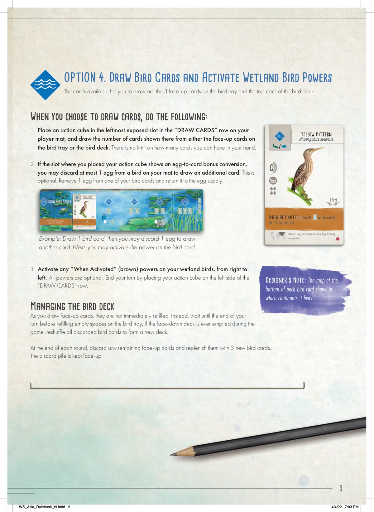
📝 第 9 页 AI 机翻对照（点击展开）
选项4：摸取鸟类卡牌并激活湿地鸟类能力
可供你摸取的卡牌是鸟类托盘上的3张正面朝上的卡牌和牌库顶部的卡牌。
当你选择摸取卡牌时，执行以下操作：
- 在你玩家版图上"摸取卡牌"行的最左侧空槽位放置一个行动立方体，并从鸟类托盘上的正面朝上卡牌或鸟类牌库中摸取该槽位所示数量的卡牌。你手牌中的卡牌数量没有限制。
- 如果你放置行动立方体的槽位显示了蛋到卡牌的奖励转换，你可以从你版图上的一只鸟类卡牌中弃置最多1个蛋来额外摸取一张卡牌。这是可选的。从你的一张鸟类卡牌上移除1个蛋并将其放回蛋供应区。
- 从右到左激活你湿地鸟类上的"激活时"（棕色）能力。所有能力都是可选的。通过将你的行动立方体放置在"摸取卡牌"行的左侧来结束你的回合。
管理鸟类牌库
当你摸取正面朝上的卡牌时，它们不会立即被补充。相反，等到你回合结束时再补充鸟类托盘上的空位。如果在游戏过程中牌库被抽空，将所有弃置的鸟类卡牌重新洗牌形成一个新的牌库。
在每个回合结束时，弃置所有剩余的正面朝上的卡牌，并用3张新的鸟类卡牌替换它们。弃牌堆保持正面朝上。
A
黄苇鳽
Ixobrychus sinensis
苇鳽细长的条纹是生活在芦苇丛中的伪装。
49厘米
激活时：摸取鸟类托盘中间槽位中的卡牌。
/
A
黄苇鳽
Ixobrychus sinensis
苇鳽细长的条纹是生活在芦苇丛中的伪装。
49厘米
激活时：摸取鸟类托盘中间槽位中的卡牌。
/
设计师注：每张鸟类卡牌底部的地图显示了它所生活的洲。
示例：摸取1张鸟类卡牌，然后你可以弃置1个蛋来再摸取一张卡牌。接下来，你可以激活该鸟类卡牌上的能力。
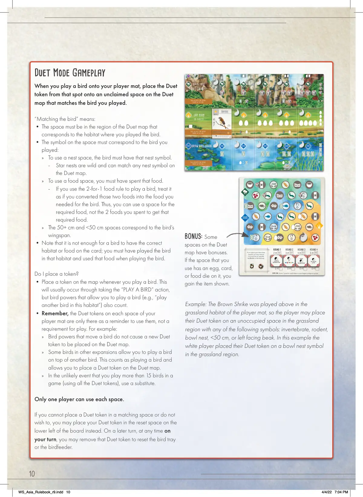
📝 第 10 页 AI 机翻对照（点击展开）
双人模式游戏玩法
当你将一只鸟放到你的玩家版图上时，将该位置上的双人模式指示物放到双人模式地图上一个与你所放鸟类相匹配的未被占据的区域。
"匹配鸟类"的意思是：
• 该区域必须在双人模式地图上与你放置鸟类的栖息地相对应的区域。
• 该区域上的符号必须与你所放的鸟类相对应：
» 要使用巢穴区域，该鸟类必须拥有那个巢穴符号。
- 星形巢穴是万能牌，可以匹配双人模式地图上的任何巢穴符号。
» 要使用食物区域，你必须已经花费了那种食物。
- 如果你使用2换1食物规则来放一只鸟，就当作你将这两种食物转换成了那只鸟所需的食物。因此，你可以使用所需食物对应的区域，而不是你花费的2种食物。
» 50+厘米和<50厘米区域对应鸟类的翼展。
• 注意，仅仅鸟类卡牌上有正确的栖息地或食物是不够的；你必须在该栖息地放置了那只鸟，并且在放置时使用了那种食物。
我是否放置指示物？
• 每当你放一只鸟时，就在地图上放置一个指示物。这通常是通过执行"放一只鸟"行动发生的，但允许你放一只鸟的鸟类能力（例如，"在这个栖息地再放一只鸟"）也算在内。
• 记住，你玩家版图上每个区域的双人模式指示物只是作为使用它们的提醒，而不是游戏的要求。例如：
» 移动鸟类的鸟类能力不会导致在双人模式地图上放置新的双人模式指示物。
» 其他扩展中的一些鸟类允许你在另一只鸟上面放一只鸟。这算作放一只鸟，允许你在双人模式地图上放置一个双人模式指示物。
» 在极不可能的情况下，如果你在一局游戏中放了超过15只鸟（使用了所有双人模式指示物），请使用替代物。
每个区域只能由一名玩家使用。
如果你无法在匹配的区域放置双人模式指示物，或者不想放置，你可以将你的双人模式指示物放到版图左下角的重置区域代替。在之后的回合中，在你的回合的任何时候，你可以移除那个双人模式指示物来重置鸟类托盘或喂鸟器。
第4轮
第3轮
第2轮
第1轮
2分
0分
0分
0分
0分
3分
4分
5分
游戏结束：为你最大连续组中的每个指示物计1分。
喙指向右
喙指向右
喙指向左
喙指向左
<50厘米
<50厘米
50+厘米
50+厘米
如果你将你的指示物放在这里，
你可以在你的回合移除它来重置
喂鸟器或鸟类托盘。
最多
最多
最多
最多
第1轮
奖励：双人模式地图上的
一些区域有奖励。
如果你使用的区域上有蛋、
卡牌或食物骰子，你获得
所示的物品。
获得食物
下蛋
从喂鸟器中抽取鸟类卡牌
在鸟类上
然后激活这一行中的任何棕色能力
然后激活任何棕色
激活此行中的任何棕色能力
然后激活此行中的任何棕色能力
打出一只鸟
A
棕伯劳
Lanius cristatus
"Lanius"意为"屠夫"，这个名字的由来是因为伯劳会悬挂储存它们的猎物。
24厘米
激活时：所有玩家可以将他们个人供应中的1个指示物放置在他们手牌中的一只鸟上。
+
示例：棕伯劳被放置在玩家版图的草原栖息地上，因此玩家可以将他们的二重奏指示物放置在草原区域中任何一个未被占用的格子上，该格子带有以下任一符号：无脊椎动物、啮齿动物、碗状巢、<50厘米或左向喙。在此示例中，白方玩家将他们的二重奏指示物放置在草原区域中的一个碗状巢符号上。
A
在任何一行中
A
在
A
在奖励格上
最少
A
不在地图边缘
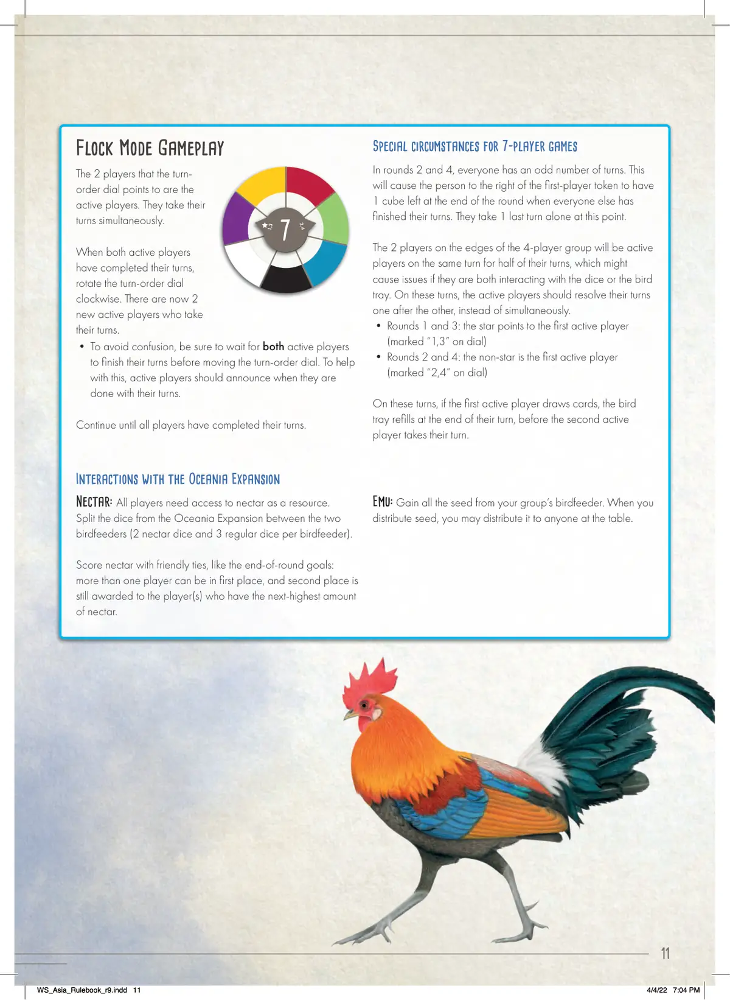
📝 第 11 页 AI 机翻对照（点击展开）
群聚模式游戏玩法
回合顺序指针指向的两名玩家是活跃玩家。他们同时进行自己的回合。
当两名活跃玩家都完成他们的回合后，顺时针旋转回合顺序指针。现在有两名新的活跃玩家进行他们的回合。
• 为避免混淆，请务必等待两名活跃玩家都完成他们的回合后再移动回合顺序指针。为此，活跃玩家应在完成回合时宣布。
继续直到所有玩家都完成他们的回合。
7人游戏的特殊情况
在第2轮和第4轮，每个人都有奇数个回合。这会导致在其他人完成回合后，第一玩家标记右侧的玩家在轮次结束时还剩1个方块。此时他们单独进行最后1个回合。
4人小组边缘的两名玩家将在他们一半的回合中同时成为活跃玩家，如果他们同时与骰子或鸟食托盘互动，可能会造成问题。在这些回合中，活跃玩家应依次进行他们的回合，而不是同时进行。
• 第1轮和第3轮：星号指向第一个活跃玩家（在转盘上标记为"1,3"）
• 第2轮和第4轮：非星号是第一个活跃玩家（在转盘上标记为"2,4"）
在这些回合中，如果第一个活跃玩家摸牌，则在第二个活跃玩家进行回合前，在第一个活跃玩家回合结束时补充鸟食托盘。
与大洋洲扩展的互动
花蜜：所有玩家都需要将花蜜作为一种资源获取。将大洋洲扩展的骰子分配到两个鸟食托盘中（每个鸟食托盘2个花蜜骰子和3个普通骰子）。通过友好平局来计分花蜜，如同轮次结束目标：可以有超过一名玩家并列第一，第二名仍然授予拥有次高花蜜量的玩家。
鸸鹋：获得你所在小组鸟食托盘中的所有种子。当你分发种子时，你可以将其分发给桌上的任何玩家。
1,3
2,4
WS_Asia_Rulebook_r9.indd 11
WS_Asia_Rulebook_r9.indd 11
4/4/22 7:04 PM
4/4/22 7:04 PM
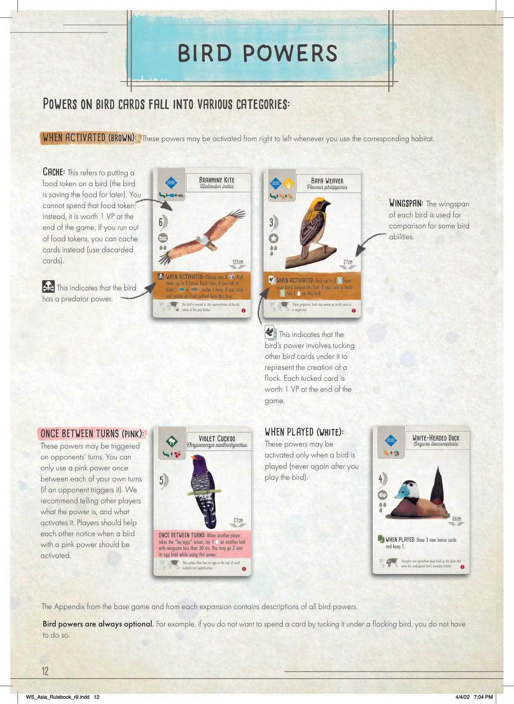
📝 第 12 页 AI 机翻对照（点击展开）
鸟类卡牌的能力分为不同类别：
激活时（棕色）：每当您使用相应的栖息地时，可以从右到左激活这些能力。
鸟类能力
这表示该鸟类的能力涉及将其他鸟类卡牌收叠到它下面，以代表鸟群的创建。每张收叠的卡牌在游戏结束时价值1 VP。
回合之间一次（粉色）：这些能力可以在对手的回合触发。您只能在每两次自己的回合之间使用一次粉色能力（如果对手触发了它）。我们建议告知其他玩家该能力的具体内容以及触发条件。玩家应该互相提醒何时应该激活带有粉色能力的鸟类。
缓存：这指的是将一个食物指示物放在鸟类上（鸟类正在保存食物以备后用）。您不能花费该食物指示物；相反，它在游戏结束时价值1 VP。如果您用完了食物指示物，可以改为缓存卡牌（使用弃牌堆中的卡牌）。
翼展：每只鸟类的翼展用于某些鸟类能力的比较。
这表示该鸟类具有捕食者能力。
A
栗鸢
Haliastur indus
这种鸟类被视为迦楼罗（Garuda）的化身，即毗湿奴神的载体。
125cm
激活时：选择任意3个骰子。掷它们最多3次。每次，如果您掷出至少1个或，在此处缓存1个食物。如果没有，停止并将本轮在此处缓存的所有食物全部返回。
+
A
紫杜鹃
Chrysococcyx xanthorhynchus
这种杜鹃经常将蛋产在小太阳鸟和蜘蛛猎手的巢中。
27cm
回合之间一次：当其他玩家执行"产卵"行动时，在另一只翼展小于30厘米的鸟类上放置1个蛋。使用此能力时，您可以超过该鸟类的蛋限制2个。
+
A
白头硬尾鸭
Oxyura leucocephala
干旱和农业活动已经干涸了这种濒危鸟类的繁殖湖泊。
66cm
打出时：抽取3张新的奖励卡牌并保留1张。
+
A
织布鸟
Ploceus philippinus
这些群居的鸟类可能会在一棵树上编织多达60个巢。
27cm
激活时：从您的手牌中收叠最多3张卡牌到这只鸟类后面。如果您收叠了至少1张，在这只鸟类上放置1个蛋。
+ +
打出时（白色）：这些能力只能在鸟类打出时激活（在您打出鸟类后不能再激活）。
基础游戏和每个扩展的附录中包含所有鸟类能力的描述。
鸟类能力始终是可选的。例如，如果您不想通过将卡牌收叠到群居鸟类下面来花费它，您不必这样做。
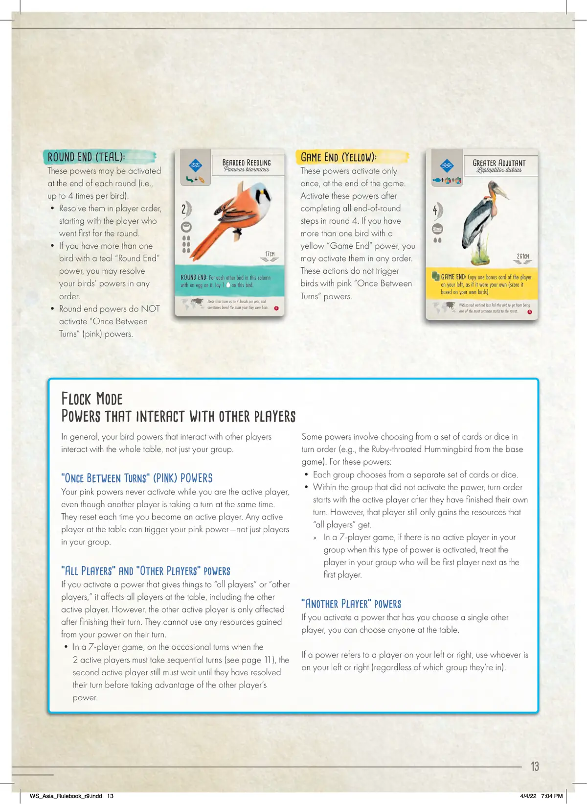
📝 第 13 页 AI 机翻对照（点击展开）
回合结束（青色）：
这些能力可以在每个回合结束时激活
（即，每只鸟最多可激活4次）。
• 按玩家顺序解决，从本回合
先行的玩家开始。
• 如果你有多只具有青色"回合结束"
能力的鸟，你可以按任意顺序
解决你的鸟的能力。
• 回合结束能力不会激活"回合之间"
（粉色）能力。
A
髯苇雀
Panurus biarmicus
这些鸟类每年最多可繁殖4窝，有时
甚至在出生的同一年就繁殖。
17cm
回合结束：对于本列中其他每只有蛋的鸟，
在这只鸟上放置1个蛋。
+
A
大于秃鹳
Leptoptilos dubius
湿地的大面积丧失导致这种鸟类从
最常见之一的鹳变为最稀有的。
261cm
游戏结束：复制你左边玩家的一张奖励卡，
就像它是你自己的（根据你自己的鸟计分）。
+ +
游戏结束（黄色）：
这些能力只在游戏结束时激活一次。
在完成第4轮的所有回合结束步骤后激活这些能力。如果你有多只具有
黄色"游戏结束"能力的鸟，你可以按任意顺序激活它们。
这些行动不会触发具有粉色"回合之间"能力的鸟。
群组模式
与其他玩家互动的能力
通常，与其他玩家互动的鸟能力
是与整个桌子互动，而不仅仅是你的群组。
"回合之间"（粉色）能力
当你处于活跃玩家状态时，你的粉色能力永远不会激活，
即使其他玩家同时也在进行回合。
它们在你每次成为活跃玩家时重置。桌子上的任何活跃玩家都可以触发你的粉色能力——不仅仅是你的群组中的玩家。
"所有玩家"和"其他玩家"能力
如果你激活一个给予"所有玩家"或"其他玩家"物品的能力，它会影响桌子上的所有玩家，包括其他活跃玩家。然而，其他活跃玩家只有在完成他们的回合后才会受到影响。他们不能在他们的回合中使用从你的能力中获得任何资源。
• 在7人游戏中，偶尔当2个活跃玩家必须连续进行回合时（见第11页），第二个活跃玩家仍然必须等到他们解决了自己的回合后才能利用另一个玩家的能力。
一些能力涉及按顺序从一组卡牌或骰子中选择（例如，基础游戏中的红喉蜂鸟）。对于这些能力：
• 每个群组从单独的一组卡牌或骰子中选择。
• 在没有激活能力的群组内，回合顺序从活跃玩家完成自己的回合后开始。然而，该玩家仍然只获得"所有玩家"得到的资源。
» 在7人游戏中，如果激活此类能力时你的群组中没有活跃玩家，则将
你小组中将成为下一轮第一个玩家的玩家，作为第一个玩家。
"其他玩家"能力
如果你激活了一个需要你选择一位其他玩家的能力，你可以选择桌上的任何玩家。
如果一个能力指的是你左边或右边的玩家，请使用你左边或右边的玩家（无论他们属于哪个小组）。
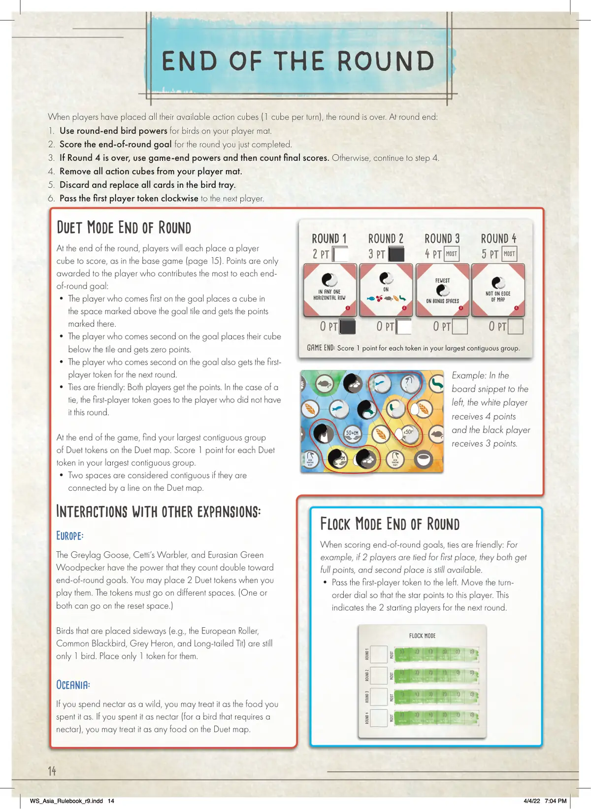
📝 第 14 页 AI 机翻对照（点击展开）
当玩家放置完所有可用的行动立方体（每回合1个立方体）时，本轮结束。在回合结束时：
- 使用玩家版图上鸟类的回合结束能力。
- 为你刚完成的这一轮计分（回合结束目标）。
- 如果第4轮结束，则使用游戏结束能力，然后计算最终分数。否则，继续步骤4。
- 从你的玩家版图上移除所有行动立方体。
- 弃置并替换鸟托盘中的所有卡牌。
- 将起始玩家指示物顺时针传递给下一位玩家。
回合结束
群聚模式回合结束
在计回合结束目标时，平局是友好的：例如，如果有2名玩家并列第一，他们都获得全部分数，第二名仍然可用。
• 将起始玩家指示物向左传递。移动回合顺序拨盘，使星形标记指向该玩家。这表示下一轮的2名起始玩家。
第1轮
群聚模式
第2轮
第3轮
第4轮
最多
最多
最多
最多
第一名
第一名
第一名
第一名
第二名
第二名
第二名
第二名
第三名
第四名
第五名
第三名
第四名
第五名
第三名
第四名
第五名
第三名
第四名
第五名
与其他扩展的互动：
欧洲：
灰雁、苇莺和欧亚绿啄木鸟拥有在回合结束目标中计算双倍的能力。当你使用它们时，可以放置2个二重标记。这些标记必须放在不同的格子上。（一个或两个都可以放在重置格上。）
侧向放置的鸟（如欧洲蓝鸟、乌鸫、苍鹭和长尾山雀）仍然只算1只鸟。只为它们放置1个标记。
大洋洲：
如果你将花蜜作为万能资源使用，你可以将其视为你花费的资源类型。如果你将其作为花蜜使用（用于需要花蜜的鸟），你可以将其视为二重地图上的任何食物。
二重模式回合结束
在回合结束时，玩家将各自放置一个玩家立方体来计分，如同基础游戏（第15页）。只有对每个回合结束目标贡献最多的玩家才能获得分数：
• 在目标上排名第一的玩家将立方体放置在目标板块上方标记的格子上，并获得那里标记的分数。
• 在目标上排名第二的玩家将他们的立方体放在板块下方，并获得零分。
• 在目标上排名第二的玩家也获得下一轮的起始玩家指示物。
• 平局是友好的：两位玩家都获得分数。在平局情况下，起始玩家指示物交给本回合没有持有它的玩家。
在游戏结束时，找出你在二重地图上最大的连续二重标记组。为你最大的连续二重标记组中的每个二重标记计1分。
• 如果两个格子通过二重地图上的线相连，则它们被认为是连续的。
第4轮
第3轮
第2轮
第1轮
2分
0分
0分
0分
0分
3分
4分
5分
游戏结束：为你最大的连续组中的每个指示物计1分。
最多
最多
最多
最多
第1轮
A
在任何一行水平行中
A
在
A
在奖励格上
最少
A
不在地图边缘
喙
指向
右
喙
指向
右
喙
指向
左
<50厘米
50+厘米
50+厘米
示例：在左侧的版图片段中，白方玩家获得4分，黑方玩家获得3分。
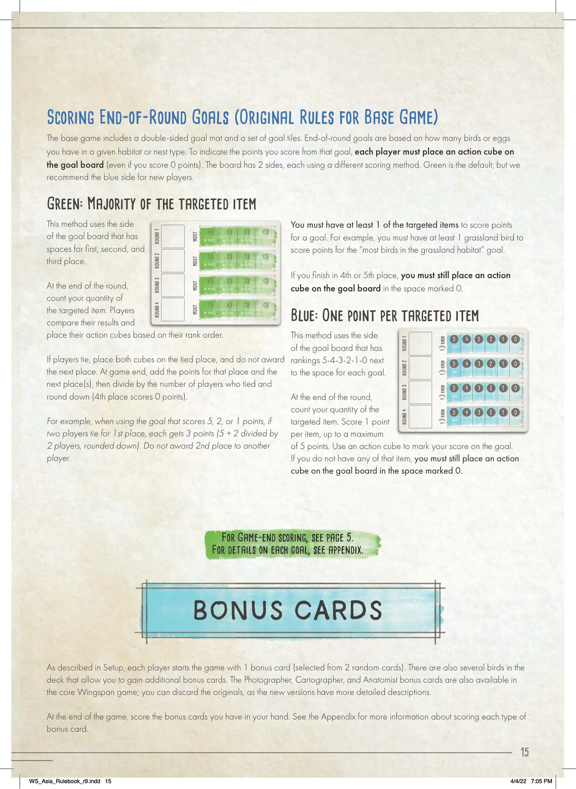
📝 第 15 页 AI 机翻对照（点击展开）
奖励卡牌
如设置部分所述，每位玩家在游戏开始时拥有1张奖励卡（从2张随机卡牌中选择）。牌库中还有一些鸟类卡牌，可以让你获得额外的奖励卡。摄影师、制图师和解剖学家奖励卡在核心《翼展》游戏中也有提供；你可以丢弃原始版本，因为新版本有更详细的描述。
在游戏结束时，计算你手牌中奖励卡的分数。关于每种奖励卡牌的计分详情，请参见附录。
关于游戏结束计分，请见第5页。
关于各项目标的详情，请参见附录。
第1轮
第2轮
第3轮
第4轮
最多数
第1名
第1名
第1名
第1名
第2名
第2名
第2名
第2名
第3名
第3名
第3名
第3名
最多数
最多数
最多数
第1轮
第2轮
第3轮
第4轮
各1张
各1张
各1张
各1张
最大值
最大值
最大值
最大值
计分轮次目标（基础游戏原始规则）
基础游戏包含一个双面目标垫和一套目标板块。轮次目标基于你在特定栖息地或巢类型中拥有的鸟类或蛋的数量。为了表示你从该目标获得的分数，每位玩家必须在目标版图上放置一个行动立方体（即使你得0分）。版图有2面，每面使用不同的计分方法。绿色是默认面，但我们建议新玩家使用蓝色面。
绿色：目标物品的多数
这种方法使用目标版图上有第1、第2和第3名位置的一面。
在回合结束时，计算你目标物品的数量。玩家比较他们的结果并根据排名顺序放置他们的行动立方体。
如果玩家平局，将两个立方体都放在平局的位置上，不授予下一个名次。在游戏结束时，将该名次和下一个名次的分数相加，然后除以平局的玩家数量并向下取整（第4名得0分）。
例如，在使用得5、2或1分的目标时，如果两名玩家并列第1名，每人得3分（5+2除以2名玩家，向下取整）。不要将第2名授予另一名玩家。
你必须至少有1个目标物品才能为目标得分。例如，你必须至少有1只草原鸟类才能为"草原栖息地中鸟类最多"的目标得分。
如果你获得第4或第5名，你仍然必须在目标版图上标记为0的位置放置一个行动立方体。
蓝色：每个目标物品得1分
这种方法使用目标版图上每个目标旁边有5-4-3-2-1-0排名的一面。
在回合结束时，计算你目标物品的数量。每个物品得1分，最多得5分。使用行动立方体在目标上标记你的分数。
如果你没有任何该物品，你仍然必须在目标版图上标记为0的区域放置一个行动立方体。
📝 第 16 页 AI 机翻对照（点击展开）
其他说明
• 鸟类信息来自《世界鸟类》(birdsoftheworld.org)、Paula Hammond和Per Christiansen所著的《鸟类百科全书》以及其他来源。
• 鸟类照片来源包括Glenn Bartley、Alan Murphy、Roman T. Brewka、Rob Palmer和Peter Green。
• 鸟类版画和其他插图可以在Redandbluedesigns.com找到。
• 字体Cardenio Modern由Nils Cordes设计，nilscordes.com。
• 《翼展亚洲》还包含由Beth Sobel绘制的喂鸟器和澳洲玩家垫插图，以及由Catalina Martinez绘制的鸟类插图。
想要观看游戏教学视频？
访问 stonemaiergames.com/games/wingspan/videos
想要其他语言的规则？
在 stonemaiergames.com/games/wingspan/rules 下载数十种语言的规则和指南
游戏时有问题或想分享故事？
在Wingspan Facebook小组发布，在BoardGameGeek上提及，或推文@stonemaiergames
需要替换零件？
在 stonemaiergames.com/replacement-parts 请求
想保持联系？
在 stonemaiergames.com/e-newsletter 订阅月度更新
©2019 Stonemaier LLC. Wingspan是Stonemaier LLC的商标。保留所有权利。
鸣谢
历史学家奖励卡：如果你将这个扩展与基础游戏混合使用，你可能需要排除基础游戏中的历史学家卡：这个扩展中没有以人名命名的鸟类。
目前有一个日益增长的运动，旨在改变基于人名的英语常见鸟类名称——这些鸟类有资格获得历史学家卡。在鸟类通用名称中被纪念的收藏家、探险家、资助者和朋友几乎总是北美洲人和欧洲人，无论这些鸟类来自哪里。更糟糕的是，其中一些人除了（或作为其鸟类学探索的一部分）有不光彩的历史。当我整理这个扩展时，我对许多以人名命名的鸟类选择并不感到兴奋。我决定不强行将它们包含进来，只是为了使卡牌分配适合历史学家卡。——Elizabeth Hargrave。
翼展：翼展测量在亚洲不像在北美洲和欧洲那样广泛使用，而且我们无法找到许多鸟类的翼展数据。（相反，许多亚洲鸟类学家只测量单翼。）在必要时，我们已尽力根据可用数据推断翼展。
WS_Asia_Rulebook_r9.indd 16
WS_Asia_Rulebook_r9.indd 16
4/4/22 7:05 PM
4/4/22 7:05 PM